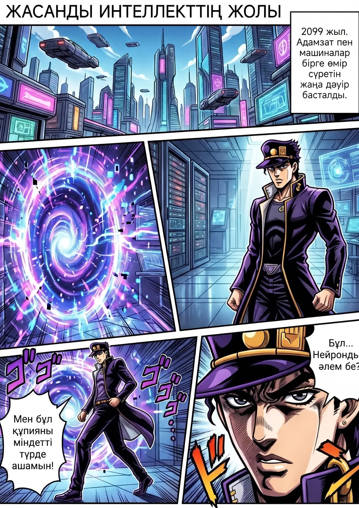
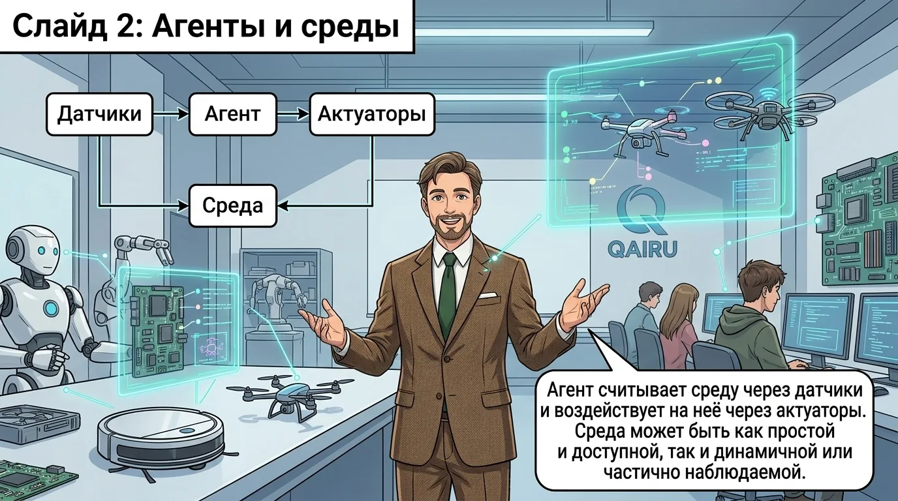
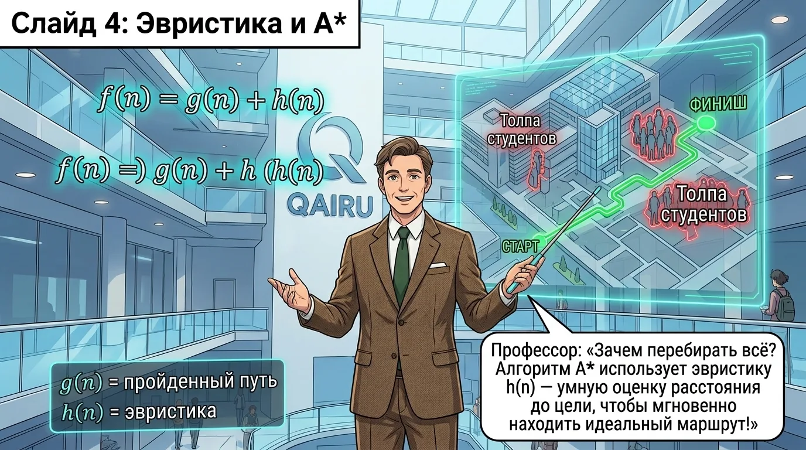
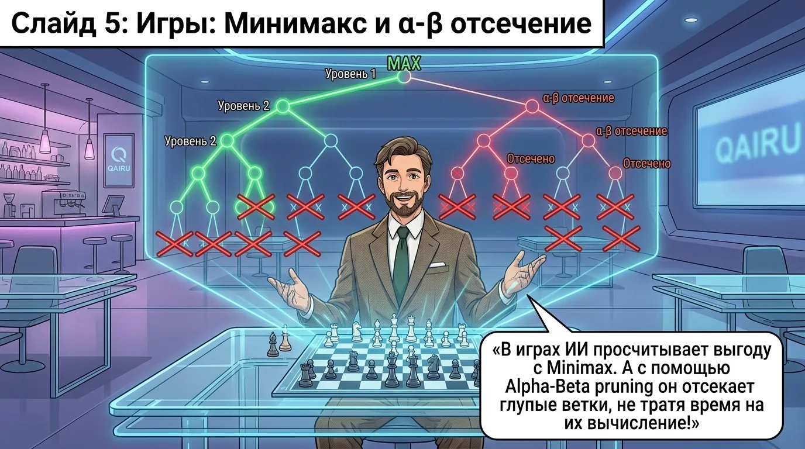
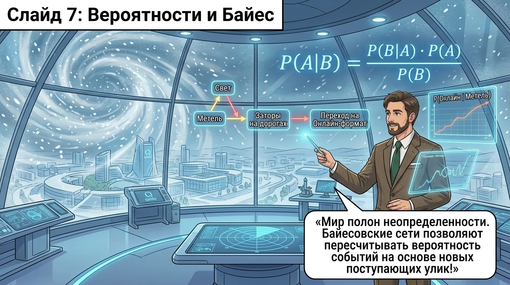
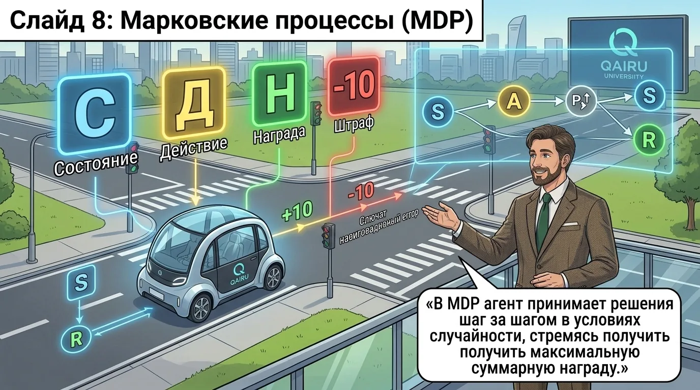
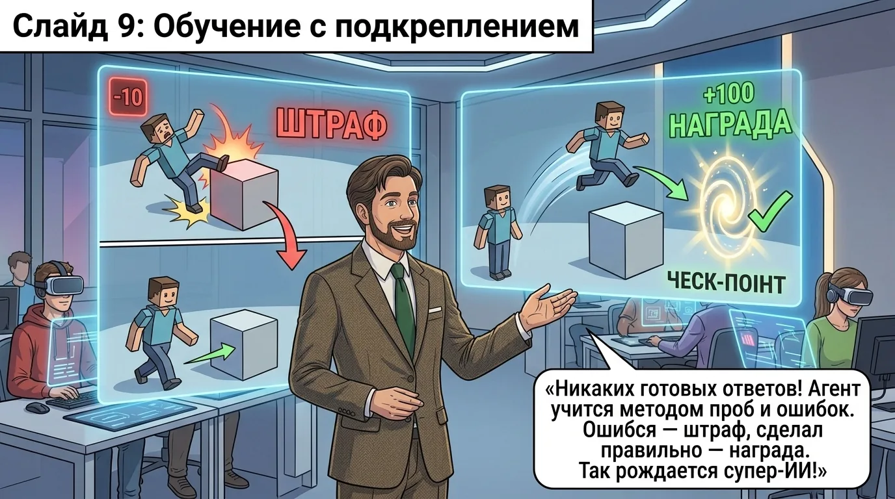
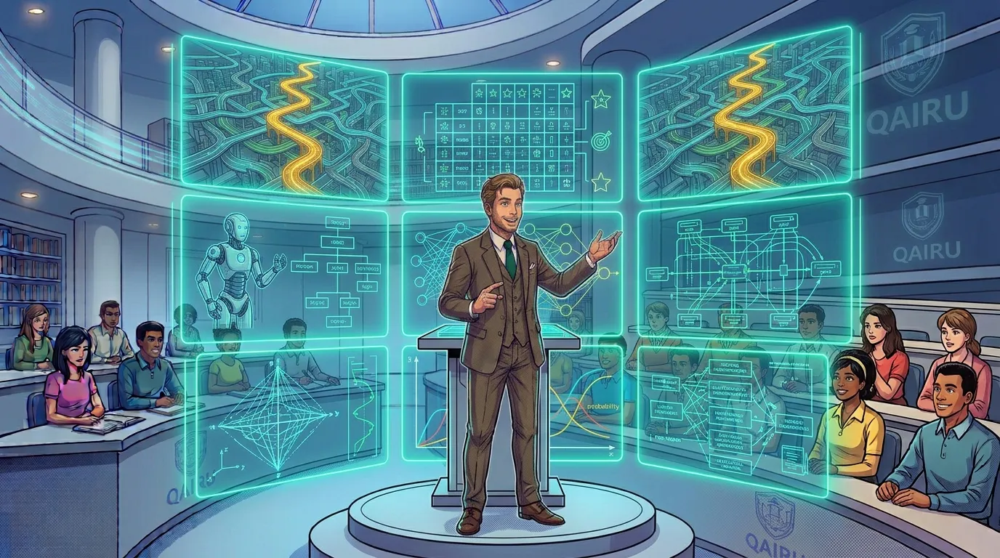

★

Страница от Рыскадыра Бекнура (Canva). Казахский текст, манга в стиле JoJo.
01
С чего всё началось: правила, тест Тьюринга и первые задачи.
02
П
История ИИ
«Началось всё в 1950-м. Алан Тьюринг задал вопрос: может ли машина мыслить? С этого вопроса началась вся история ИИ.»
После машины Тьюринга — первый ИИ-бум, затем зима, а потом ренессанс нейросетей.
03

Агент видит среду датчиками и меняет её актуаторами.
04
П
Типы агентов
«Агенты бывают разные. Простой реагирует так же, как датчик. Сложный — думает. Обучающийся — учится на ошибках.»
По мере роста сложности агента растёт и сложность среды, с которой он справляется.
05
BFS идёт по уровням, DFS уходит в глубину ветки.
06
П
Поиск — лабиринт
«В лабиринте без карты можно идти вглубь (DFS) или по уровням (BFS). Второе быстрее к выходу, но занимает больше памяти.»
DFS экономит память, но может уйти в тупик. BFS гарантирует кратчайший путь.
07

A* не перебирает всё: эвристика отсекает лишние пути.
08
П
Эвристика — расстояние
«Эвристика — это как расстояние по прямой. Она не всегда достижима, но быстро подсказывает, куда идти.»
Евклидово расстояние — самая простая эвристика для поиска пути на карте.
09
П
Эвристика — допустимость
«Эвристика допустима, если она никогда не завышает реальный путь. Иначе A* потеряет оптимальность и пойдёт не туда.»
Допустимая эвристика никогда не переоценивает расстояние до цели.
10

Минимакс считает выгоду, альфа-бета выбрасывает глупые ветки.
11
П
Глубина поиска
«Глубина поиска — это как взглянуть на 10 ходов вперёд. Но каждый ход умножает варианты. Без отсечения — взрыв комбинаторики.»
В шахматах 35 ходов в среднем. Глубина 6 — это 35^6 = 1,8 миллиарда позиций.
12
П
Альфа-бета отсечение
«Альфа-бета говорит: если уже нашли ход лучше, чем этот, — эту ветку можно не смотреть. Экономия огромная.»
Альфа-бета не меняет результат минимакса, но сокращает перебираемые позиции в сотни раз.
13
Правила и факты дают новые выводы — это база знаний.
14
П
Логика — правила
«Логика предикатов — это правила языка. Если Сократ — человек, и все люди смертны, то Сократ смертен. Так работает вывод.»
Предикат — это утверждение, которое может быть истинным или ложным.
15
П
Логика — вывод
«Вывод — это как домино. Из одних фактов падают другие. Правила говорят, в каком порядке.»
Прямой вывод идёт от фактов к последствиям. Обратный — от цели к фактам.
16

Байес пересчитывает вероятность, когда приходят новые улики.
17
П
Байес — приоритет
«Приоритет — это то, что мы знаем до наблюдения. Не было дождя 10 дней — значит, вероятность дождя низкая, но не ноль.»
P(A) — наше убеждение до новых данных. Байес позволяет его обновлять.
18
П
Байес — лайклихуд
«Лайклихуд — это как данные согласуются с гипотезой. Увидели мокрую траву — вероятность дождя выросла.»
P(B|A) — вероятность увидеть данные, если гипотеза верна.
19
П
Байес — апостериор
«Апостериорная вероятность — это приоритет, обновлённый данными. Байес — это способ учиться на ходу: вчера верил в одно, сегодня — в другое.»
P(A|B) — итоговая вера после того, как увидели данные B.
20

MDP: состояние, действие, награда — и шаг за шагом к максимуму.
21
П
MDP — состояния
«Состояние — это снимок мира в момент времени. Где дрон, как быстро летит, куда смотрит. Всё, что нужно для решения.»
S — множество всех возможных состояний среды.
22
П
MDP — действия
«Действие — это то, что агент может сделать. Пять кнопок, пять возможностей. Выбор зависит от состояния.»
A — множество действий. В каждом состоянии доступны не все действия.
23
П
MDP — награда
«Награда — это число, которое говорит: хорошо или плохо. Цель агента — набрать как можно больше за всю жизнь.»
R — функция награды. Агент стремится максимизировать суммарную награду, а не только ближайшую.
24

Обучение с подкреплением: ошибка — штраф, верный шаг — награда.
25
П
RL — разведка
«Разведка против эксплуатации: идти известным путём или пробовать новый? Умный агент балансирует.»
Exploration — пробовать новое, чтобы узнать, не лучше ли оно.
26
П
RL — эксплуатация
«Эксплуатация — это использовать то, что уже знаешь. Путь давал +100 — иди по нему снова и снова.»
Exploitation — выбирать действие с лучшей известной наградой.
27
П
RL — Q-обучение
«Q-обучение хранит для каждого состояния-действия оценку: сколько наград получу, если сделаю это. И обновляет её после каждого шага.»
Q(s,a) — ожидаемая суммарная награда за действие a в состоянии s.
28
П
RL — политика
«Политика — это стратегия агента: в каждом состоянии какое действие выбирать. Оптимальная политика даёт максимум наград.»
π — политика. Оптимальная π* максимизирует ожидаемую суммарную награду.
29

П
Финал курса
«Девять идей — девять кирпичей ИИ. Дальше — практика. Берите любую и стройте.»
Агенты, поиск, эвристики, игры, логика, Байес, MDP, RL — это фундамент.
30
П
Карта курса
«Карта всего курса: от введения до обучения с подкреплением. Выбирайте, с чего начать.»
Каждый раздел — отдельный мир. Соединив их, вы получите настоящего ИИ.